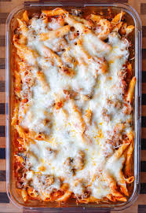

Pasta Bake

A pasta bake is a warm, oven-baked dish made by mixing cooked pasta with sauce,
cheese, and other ingredients like meat or vegetables. It’s baked until bubbly
and golden, creating a comforting and flavorful meal.
Ingredients
- 8 oz mostaccioli or similar pasta
- 1 pound lean ground beef
- 1 chopped onion
- 28 oz spaghetti sauce
- 2 cups shredded mozzarella cheese
- 4 oz canned mushrooms, drained
Steps
- Preheat oven to 325F or 165C. Grease a 9x13-inch casserole dish.
- Fill a large pot with lightly salted water and bring to a rolling boil.
Stir in mostaccioli and return to a boil. Cook mostaccioli uncovered,
stirring occasionally, until tender yet firm to the bite, 8 to 10 minutes.
Drain well.
- Meanwhile, cook ground beef and onion in a skillet over medium heat until browned.
- Combine spaghetti sauce, mozzarella cheese, mushrooms, mostaccioli, and ground
beef mixture in a large bowl; transfer to the prepared casserole dish.
- Bake in the preheated oven until very hot, about 20 minutes.
Home